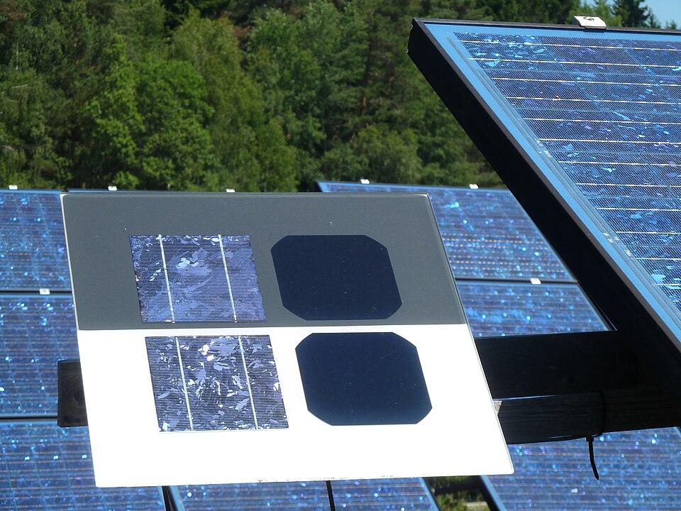
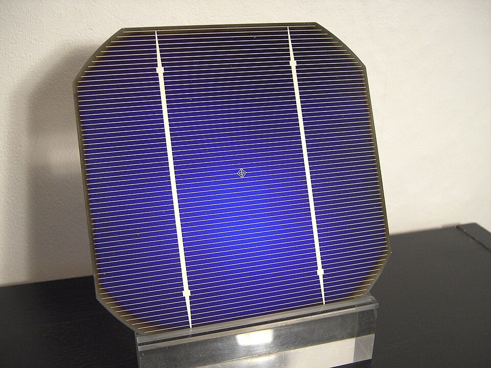
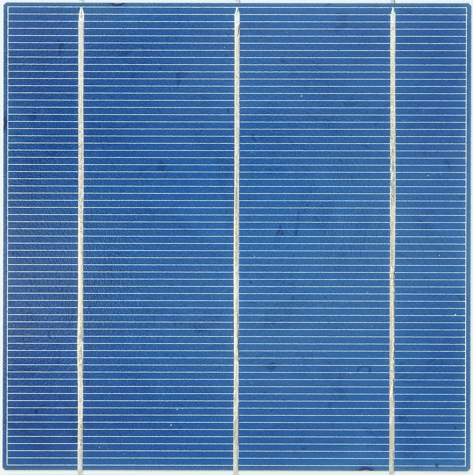
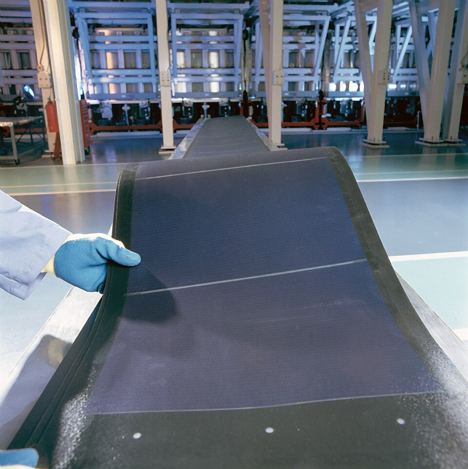

เมื่อเรียนจบบทนี้ นักศึกษาจะสามารถ After this chapter you will be able to:
- อธิบายปรากฏการณ์โฟโตวอลเทอิกโดยเชื่อมโยงกับรอยต่อพีเอ็นในบทที่ 13 และเปรียบเทียบเซลล์แต่ละชนิด explain the photovoltaic effect in terms of the PN junction of Chapter 13, and compare the types of cell;
- อ่านเส้นโค้ง I–V และ P–V ของแผง ระบุจุดกำลังสูงสุด และอธิบายหน้าที่ของ MPPT read a module's I–V and P–V curves, identify the maximum power point, and explain what an MPPT does;
- แก้ค่าแรงดันของแผงตามอุณหภูมิ และคำนวณจำนวนแผงต่ออนุกรมให้อยู่ในย่านที่อินเวอร์เตอร์รับได้ correct a module's voltage for temperature and size a string to fit an inverter's input window;
- คำนวณขนาดแบตเตอรี่จากพลังงานที่ใช้ต่อวัน ระดับการคายประจุ และจำนวนวันสำรอง size a battery from the daily energy, the depth of discharge and the days of autonomy required;
- เปรียบเทียบต้นทุนต่อหน่วยพลังงานตลอดอายุใช้งานของแบตเตอรี่ต่างชนิด compare battery technologies on their cost per unit of energy delivered over their whole life;
- แยกแยะโครงสร้างระบบออนกริดกับออฟกริด และประเมินความคุ้มค่าของระบบบนหลังคาโรงคัดบรรจุ distinguish on-grid from off-grid architectures, and assess the economics of a rooftop system on a packing house.
📝แบบทดสอบก่อนเรียน Pre-test
ทำก่อนเริ่มอ่านเนื้อหา เพื่อสำรวจความรู้เดิมของตนเอง Take this before reading, to see what you already know.
ก่อนเรียน: บทที่ 14Pre-test: Chapter 14
5 ข้อ · ปรนัย · ตรวจคำตอบได้ทันที 5 multiple-choice questions · marked instantly
14.1เซลล์แสงอาทิตย์ทำงานอย่างไร How a photovoltaic cell works
ในบทที่ 13 เราเห็นแล้วว่ารอยต่อพีเอ็นมีสนามไฟฟ้าภายในอยู่ที่แถบพร่อง ซึ่งคอยผลักอิเล็กตรอนไปทางฝั่ง N และผลักโฮลไปทางฝั่ง P ตลอดเวลา เซลล์แสงอาทิตย์คือการนำสนามนั้นมาใช้ประโยชน์ — ทำรอยต่อพีเอ็นให้ใหญ่และบาง แล้วปล่อยให้แสงตกลงมา เมื่อโฟตอนที่มีพลังงานมากพอชนเข้ากับอะตอมซิลิคอน มันจะกระแทกอิเล็กตรอนตัวหนึ่งให้หลุดจากพันธะ เกิดเป็น คู่อิเล็กตรอน–โฮล และถ้าเหตุการณ์นี้เกิดใกล้รอยต่อ สนามไฟฟ้าที่มีอยู่แล้วจะแยกทั้งคู่ออกจากกันทันที ก่อนที่มันจะรวมตัวกันกลับ ผลคืออิเล็กตรอนสะสมอยู่ฝั่ง N และโฮลสะสมฝั่ง P เกิดเป็นแรงดันที่ขั้วทั้งสอง In Chapter 13 we saw that a PN junction carries a built-in electric field across its depletion region, permanently pushing electrons toward the N side and holes toward the P side. A solar cell puts that field to work: make the junction large and thin, and let light fall on it. When a photon of sufficient energy strikes a silicon atom it knocks an electron out of its bond, creating an electron-hole pair. If that happens near the junction, the field already there separates the two at once, before they can recombine. Electrons pile up on the N side and holes on the P side, and a voltage appears across the terminals.
ขั้วบนทำเป็นซี่บาง ๆ เพราะทุกตารางมิลลิเมตรที่โลหะบังไว้คือพื้นที่ที่ผลิตไฟไม่ได้ การออกแบบขั้วจึงเป็นการชั่งน้ำหนักระหว่างความต้านทานกับการบังแสง A cross-section of a solar cell. Yellow dots are arriving photons, blue ones the electrons the field sweeps up into the N side, red ones the holes pushed down into the P. Note that a solar cell stores nothing at all: it is a converter working in the instant, and the moment the light stops the current stops with it. That is why an off-grid system needs the batteries of Section 14.3.
The top contact is made of thin fingers because every square millimetre of metal is area that generates nothing — contact design is a balance between resistance and shading.
แสงอาทิตย์มีโฟตอนหลายพลังงานปนกัน โฟตอนที่พลังงาน น้อยเกินไป (ช่วงอินฟราเรด) ทะลุผ่านไปเฉย ๆ ไม่สร้างคู่อิเล็กตรอน–โฮลเลย ส่วนโฟตอนที่พลังงาน มากเกินไป (ช่วงอัลตราไวโอเลต) สร้างคู่ได้ก็จริง แต่พลังงานส่วนเกินกลายเป็นความร้อนทิ้งไป มีเพียงโฟตอนที่พลังงานใกล้เคียงกับช่องว่างพลังงานของซิลิคอน (ราว 1.1 eV) เท่านั้นที่ถูกใช้อย่างคุ้มค่า ข้อจำกัดทางฟิสิกส์นี้เรียกว่าขีดจำกัด Shockley–Queisser ซึ่งกำหนดเพดานไว้ราว 33 % สำหรับเซลล์รอยต่อเดียว เซลล์เชิงพาณิชย์ที่ทำได้ 20–23 % จึงถือว่าใกล้เคียงขีดจำกัดพอสมควรแล้ว Sunlight is a mixture of photon energies. Photons with too little energy — the infrared — pass straight through and create nothing. Photons with too much — the ultraviolet — do create a pair, but their surplus energy is simply lost as heat. Only photons close to silicon's band gap of about 1.1 eV are used well. This physical limit, the Shockley–Queisser limit, caps a single-junction cell at roughly 33 %, so commercial cells reaching 20–23 % are already respectably close to it.
14.1.1 ชนิดของเซลล์แสงอาทิตย์ 14.1.1 Types of photovoltaic cell
เซลล์แสงอาทิตย์ที่ขายกันอยู่แยกออกเป็นสามตระกูลหลัก และ แยกออกจากกันได้ด้วยตาเปล่า ก่อนจะอ่านป้ายพิกัดเสียอีก ความต่างที่เห็นมาจากวิธีทำผลึกซิลิคอนล้วน ๆ และวิธีทำนั้นเองที่กำหนดทั้งประสิทธิภาพและราคา The cells on the market fall into three main families, and they can be told apart by eye before the nameplate is even read. What you see comes entirely from how the silicon crystal was made — and that method is what settles both the efficiency and the price.








| ชนิดType | ประสิทธิภาพEfficiency | สัมประสิทธิ์อุณหภูมิTemp. coefficient | เหมาะกับงานแบบใดWhere it suits |
|---|---|---|---|
| ผลึกเดี่ยวMonocrystalline | 20–23 % | −0.29 %/°C | หลังคาโรงเรือนหรือโรงคัดบรรจุที่พื้นที่จำกัด ต้องการกำลังต่อตารางเมตรสูงสุด Greenhouse or packing-house roofs where area is limited and watts per square metre matter most |
| ผลึกรวมPolycrystalline | 16–18 % | −0.39 %/°C | เคยเป็นตัวเลือกราคาประหยัด ปัจจุบันถูกผลึกเดี่ยวแทนที่เกือบหมดแล้ว Once the budget choice, now almost entirely displaced by monocrystalline |
| ฟิล์มบางThin film | 10–13 % | −0.25 %/°C | ทนความร้อนดีกว่าและโค้งงอได้ เหมาะกับหลังคาโรงเรือนโค้งหรือพื้นที่กว้างที่ไม่จำกัดขนาด Better in heat and can be flexible — for curved greenhouse roofs, or wide sites where area is free |
| สองหน้า (bifacial)Bifacial | 20–22 % +5–15 % |
−0.30 %/°C | รับแสงสะท้อนจากพื้นด้านล่างได้ด้วย จึงเหมาะกับ เกษตรโซลาร์ (agrivoltaics) ที่ติดตั้งยกสูงเหนือแปลงปลูก ให้พืชได้แสงบางส่วนและเก็บไฟได้ทั้งสองหน้า Also collects light reflected off the ground, which suits agrivoltaics — mounted high over a crop so the plants get part of the light and both faces of the panel work |
14.2แผงเซลล์แสงอาทิตย์ The photovoltaic module
เซลล์ซิลิคอนหนึ่งเซลล์ให้แรงดันเพียงราว 0.6 V ซึ่งน้อยเกินกว่าจะใช้งานอะไรได้ ผู้ผลิตจึงต่อเซลล์อนุกรมกันในแผงเดียว เช่น 60 หรือ 72 เซลล์ ตามหลักการเดียวกับการต่อตัวต้านทานอนุกรม ในบทที่ 3 คือ แรงดันบวกกัน กระแสเท่าเดิม และเมื่อนำแผงมาต่อกันเป็นระบบ ก็ใช้หลักการเดียวกันนี้อีกชั้นหนึ่ง One silicon cell gives only about 0.6 V, far too little to be useful, so a manufacturer wires 60 or 72 of them in series inside a module — the same rule as the series resistors of Chapter 3: voltages add, the current stays the same. Wiring modules into a system applies that rule once more, one level up.
ต่ออนุกรมIn series
\[ V_{\text{total}} = N \times V_{\text{module}}, \quad I_{\text{total}} = I_{\text{module}} \]ต่อขนานIn parallel
\[ I_{\text{total}} = N \times I_{\text{module}}, \quad V_{\text{total}} = V_{\text{module}} \]14.2.1 เส้นโค้ง I–V และจุดกำลังสูงสุด 14.2.1 The I–V curve and the maximum power point
แผงเซลล์แสงอาทิตย์ไม่ใช่ทั้งแหล่งจ่ายแรงดันและแหล่งจ่ายกระแสตามนิยามในบทที่ 2 แต่อยู่กึ่งกลางระหว่างสองอย่างนั้น — ในช่วงแรงดันต่ำมันประพฤติตัวเหมือนแหล่งจ่ายกระแส (กระแสเกือบคงที่ไม่ว่าแรงดันจะเป็นเท่าใด) และในช่วงแรงดันสูงใกล้ \(V_{oc}\) มันกลับประพฤติตัวเหมือนแหล่งจ่ายแรงดัน กำลังที่ได้คือผลคูณ \(P = V \times I\) จึงเป็นศูนย์ที่ปลายทั้งสองข้าง และมีค่าสูงสุดเพียงจุดเดียวตรงหัวเข่าของเส้นโค้ง เรียกว่า จุดกำลังสูงสุด (MPP) A PV module is neither the voltage source nor the current source defined in Chapter 2, but something in between. At low voltage it behaves like a current source, holding its current almost regardless of voltage; near \(V_{oc}\) it behaves like a voltage source. Since the power is the product \(P = V \times I\), it is zero at both ends and greatest at exactly one place, the knee of the curve — the maximum power point.
14.2.2 แสงและอุณหภูมิเปลี่ยนเส้นโค้งอย่างไร 14.2.2 What light and temperature do to the curve
ค่าบนป้ายพิกัดของแผงวัดที่สภาวะมาตรฐาน (STC) คือ ความเข้มแสง 1000 W/m² อุณหภูมิเซลล์ 25 °C ซึ่ง แทบไม่เคยเกิดขึ้นจริงในประเทศไทย เพราะตอนที่แดดแรงถึง 1000 W/m² แผงก็ร้อนถึง 60–70 °C ไปแล้ว การออกแบบจึงต้องรู้ว่าสองปัจจัยนี้ทำอะไรกับเส้นโค้ง และมันทำคนละอย่างกัน A module's nameplate is measured at standard test conditions: 1000 W/m² of irradiance and a cell temperature of 25 °C — a combination that practically never occurs in Thailand, because by the time the sun reaches 1000 W/m² the panel is already at 60–70 °C. Design therefore requires knowing what each factor does to the curve, and they do quite different things.
\(\alpha_V\) = สัมประสิทธิ์อุณหภูมิของแรงดัน มีค่าเป็นลบเสมอ เช่น −0.27 %/°C \(\alpha_V\) = the voltage temperature coefficient, always negative, for instance −0.27 %/°C
ค่าทุกตัวที่ใช้มาตลอดหัวข้อนี้ — \(V_{oc}\), \(I_{sc}\), \(V_{mp}\), \(I_{mp}\), \(P_{\max}\) และสัมประสิทธิ์อุณหภูมิ — ไม่ได้มาจากไหนไกลเลย มันพิมพ์อยู่บนป้ายที่ติดหลังแผงทุกแผง การอ่านป้ายนี้ให้เป็นจึงเป็นทักษะที่ใช้ได้ทันทีหน้างาน Every quantity used in this section — \(V_{oc}\), \(I_{sc}\), \(V_{mp}\), \(I_{mp}\), \(P_{\max}\) and the temperature coefficients — comes from nowhere exotic. It is printed on the plate on the back of every module, and reading that plate fluently is a skill you can use the moment you are on site.
จะติดตั้งระบบบนหลังคาโรงคัดบรรจุ ใช้แผง 550 W ที่มีค่าตามป้ายพิกัด \(V_{oc} = 49.5\) V, \(V_{mp} = 41.5\) V, \(\alpha_V = -0.27\) %/°C อินเวอร์เตอร์รับแรงดันเข้าได้สูงสุด 1000 V และมีย่าน MPPT 200–850 V อุณหภูมิเซลล์ต่ำสุดที่คาดไว้คือ 15 °C (เช้าตรู่ฤดูหนาว) และสูงสุด 65 °C (เที่ยงฤดูร้อน) จงหา (ก) จำนวนแผงสูงสุดต่อหนึ่งสตริง (ข) ตรวจสอบว่าแรงดันทำงานอยู่ในย่าน MPPT ทั้งวันหรือไม่ และ (ค) กำลังติดตั้งของหนึ่งสตริง A system is to go on a packing-house roof using 550 W modules rated \(V_{oc} = 49.5\) V, \(V_{mp} = 41.5\) V, \(\alpha_V = -0.27\) %/°C. The inverter accepts at most 1000 V and its MPPT window is 200–850 V. The lowest cell temperature expected is 15 °C on a cool morning, the highest 65 °C at midday. Find (a) the greatest number of modules per string, (b) whether the operating voltage stays inside the MPPT window all day, and (c) the installed power of one string.
(ก) กรณีเลวร้ายที่สุดสำหรับแรงดันสูงคือ ตอนที่แผงเย็นที่สุด เพราะแรงดันเพิ่มขึ้นเมื่ออุณหภูมิลดลง — ข้อนี้ตรงข้ามกับสัญชาตญาณของหลายคน (a) The worst case for high voltage is when the panel is coldest, because the voltage rises as the temperature falls — which is the opposite of what most people expect.
\[ V_{oc}(15°) = 49.5\left[\,1 + (-0.0027)(15 - 25)\,\right] = 49.5\,(1.027) = 50.8\ \text{V} \] \[ N_{\max} = \frac{1000}{50.8} = 19.7 \quad\Rightarrow\quad 19\ \text{modules} \]ตรวจ: \(19 \times 50.8 = 965\) V ซึ่งต่ำกว่า 1000 V ✓ แต่ถ้าใช้ 20 แผงจะได้ 1016 V ซึ่ง เกินพิกัดและอาจทำลายอินเวอร์เตอร์ในเช้าวันที่อากาศเย็น Check: \(19 \times 50.8 = 965\) V, safely under 1000 ✓. Twenty modules would give 1016 V, over the limit and capable of destroying the inverter on a cold morning.
(ข) ตรวจย่าน MPPT ทั้งสองปลาย — ใช้ \(V_{mp}\) ไม่ใช่ \(V_{oc}\) เพราะขณะทำงานจริงแผงอยู่ที่จุด MPP (b) Check both ends of the MPPT window, using \(V_{mp}\) rather than \(V_{oc}\), since in service the module sits at its MPP.
\[ V_{mp}(15°) = 41.5\,(1.027) = 42.6\ \text{V} \quad\Rightarrow\quad 19 \times 42.6 = 810\ \text{V} \quad ✓ \] \[ V_{mp}(65°) = 41.5\left[\,1 + (-0.0027)(40)\,\right] = 41.5\,(0.892) = 37.0\ \text{V} \quad\Rightarrow\quad 19 \times 37.0 = 703\ \text{V} \quad ✓ \]ทั้งสองค่าอยู่ในย่าน 200–850 V จึงใช้งานได้ตลอดวัน Both fall inside 200–850 V, so the string works all day.
(ค) กำลังติดตั้งของหนึ่งสตริง (c) The installed power of one string
\[ P_{\text{string}} = 19 \times 550 = 10\,450\ \text{W} = 10.45\ \text{kWp} \]- อันตรายอยู่ที่ ความเย็น ไม่ใช่ความร้อน ระบบที่ออกแบบโดยดูแค่ค่าบนป้ายพิกัดที่ 25 °C จะพังในเช้าที่อากาศเย็นที่สุดของปี ซึ่งเป็นวันที่ไม่มีใครเฝ้าดู The danger is the cold, not the heat. A system designed from the 25 °C nameplate alone fails on the coldest morning of the year — the one nobody is watching.
- แรงดันแกว่งจาก 703 V ถึง 810 V ตลอดวัน คิดเป็นช่วงกว้างถึง 15 % ซึ่งเป็นเหตุผลที่อินเวอร์เตอร์ต้องมีย่าน MPPT กว้าง ไม่ใช่จุดเดียว The operating voltage swings from 703 V to 810 V over a day, a 15 % range — which is why an inverter needs a wide MPPT window rather than a single point.
- หน่วย kWp (กิโลวัตต์พีก) หมายถึงกำลังที่สภาวะ STC เท่านั้น ระบบ 10.45 kWp จะไม่เคยผลิตได้ถึง 10.45 kW จริงในประเทศไทย ค่าที่ได้จริงตอนเที่ยงมักอยู่ราว 8.5–9 kW The unit kWp, kilowatt-peak, refers to STC only. A 10.45 kWp system will never actually produce 10.45 kW in Thailand; at midday it typically gives 8.5–9 kW.
14.2.3 ไดโอดสองชนิดที่อยู่ในทุกระบบ: บายพาสและบล็อกกิง 14.2.3 The two diodes in every system: bypass and blocking
รูปที่ 14.3 จบลงด้วยปัญหาสองข้อที่ยังค้างอยู่ ข้อแรกคือ เซลล์ทุกเซลล์ในสตริงต่ออนุกรมกัน กระแสจึงต้องเท่ากันทุกจุดตามบทที่ 3 เซลล์ที่ถูกบังเพียงเซลล์เดียวจึงจำกัดกระแสของทั้งสตริง ข้อสองคือเมื่อนำสตริงมาขนานกัน สตริงที่แรงดันสูงกว่าจะดันกระแสย้อนเข้าสตริงที่ต่ำกว่าได้ ปัญหาทั้งสองข้อแก้ด้วยไดโอดที่เราเรียนมาแล้วในบทที่ 13 แต่ใช้คนละตำแหน่งและคนละหน้าที่ Figure 14.3 left two problems hanging. First, every cell in a string is in series, so by Chapter 3 the current must be the same everywhere, and a single shaded cell throttles the whole string. Second, when strings are paralleled, one at a higher voltage can drive current backwards into one at a lower. Both are solved with the diode of Chapter 13, used in two different places for two different jobs.
14.3การเก็บพลังงานด้วยแบตเตอรี่ Storing the energy: batteries
ปัญหาใหญ่ที่สุดของพลังงานแสงอาทิตย์ไม่ใช่การผลิต แต่คือ เวลา — แผงผลิตไฟมากที่สุดตอนเที่ยง แต่ปั๊มน้ำอาจต้องทำงานตอนเย็น และไฟส่องสว่างกับเซนเซอร์ต้องทำงานตลอดคืน แบตเตอรี่จึงเป็นตัวเชื่อมช่องว่างของเวลานี้ และเป็นองค์ประกอบที่ แพงที่สุดและอายุสั้นที่สุด ในระบบออฟกริด การเลือกแบตเตอรี่ผิดจึงทำให้ระบบที่ดูดีบนกระดาษกลายเป็นภาระในสามปี The hardest problem in solar is not generation but timing. The panels give most at noon, yet the pump may be wanted at dusk, and the lights and sensors must run all night. The battery bridges that gap — and it is the most expensive and shortest-lived part of an off-grid system. Choose it badly and a scheme that looked fine on paper becomes a burden within three years.
ความจุเป็นพลังงานEnergy capacity
\[ W = V \times \text{Ah} \]พลังงานที่ใช้ได้จริงUsable energy
\[ W_{\text{usable}} = V \times \text{Ah} \times \text{DoD} \]DoD (Depth of Discharge) = สัดส่วนที่ยอมให้คายประจุออกได้ โดยไม่ทำให้อายุสั้นลงเกินควร DoD, the depth of discharge — how far it may be emptied without unduly shortening its life
| หัวข้อAspect | ตะกั่ว–กรด (ดีปไซเคิล)Deep-cycle lead-acid | ลิเธียมเหล็กฟอสเฟตLithium iron phosphate |
|---|---|---|
| DoD ที่แนะนำRecommended DoD | 50 % | 80–90 % |
| อายุ (รอบ)Cycle life | 300–800 | 3000–6000 |
| ประสิทธิภาพไป–กลับRound-trip efficiency | 75–85 % | 92–96 % |
| ราคาเริ่มต้นต่อ kWhUp-front cost per kWh | ต่ำกว่าราว 3 เท่าabout 3× lower | สูงกว่าhigher |
| น้ำหนักต่อ kWhWeight per kWh | ~30 kg | ~9 kg |
| ทนความร้อนTolerance of heat | อายุลดครึ่งหนึ่งทุก 10 °C ที่สูงกว่า 25 °C Life halves for every 10 °C above 25 °C | ทนได้ดีกว่า แต่ห้ามประจุขณะอุณหภูมิต่ำกว่า 0 °C More tolerant, but must never be charged below 0 °C |
| การดูแลMaintenance | ชนิดเติมน้ำต้องตรวจระดับน้ำกลั่นทุกเดือน Flooded types need their water checked monthly | ไม่ต้องดูแล มีระบบ BMS ในตัว None; a battery management system is built in |
| เหมาะกับSuits | ระบบสำรองที่ใช้นาน ๆ ครั้ง งบจำกัด Standby duty used only occasionally, on a tight budget | ระบบที่ใช้ทุกวัน เช่น สถานีตรวจวัดหรือระบบให้น้ำอัตโนมัติ Daily cycling — monitoring stations, automatic irrigation |
สถานีตรวจวัดกลางแปลงที่ไม่มีไฟฟ้าเข้าถึง มีโหลดดังนี้ — ตัวควบคุมและเซนเซอร์ 5 W ทำงานตลอด 24 ชั่วโมง, เกตเวย์ LoRa 3 W ตลอด 24 ชั่วโมง, วาล์วโซลินอยด์ 3 ตัว ตัวละ 12 W รวมเปิดวันละ 0.5 ชั่วโมง, และกล้องตรวจการณ์ 4 W วันละ 12 ชั่วโมง ระบบใช้ไฟ 12 V ต้องการสำรองไฟได้ 3 วันในช่วงฝนตกติดต่อกัน ใช้แบตเตอรี่ LiFePO₄ ที่ DoD 80 % และประสิทธิภาพไป–กลับ 95 % ตัวแปลงไฟมีประสิทธิภาพ 90 % พื้นที่นี้มีชั่วโมงแสงอาทิตย์เต็มที่เฉลี่ย 4.5 ชั่วโมงต่อวัน และให้ใช้ตัวประกอบลดทอนรวมของแผง 0.75 จงหาขนาดแบตเตอรี่และขนาดแผงที่ต้องติดตั้ง A field monitoring station beyond the reach of mains power carries these loads: a controller and sensors drawing 5 W continuously; a LoRa gateway at 3 W continuously; three solenoid valves of 12 W each, open for a total of half an hour a day; and a 4 W camera running 12 hours. The system is 12 V and must survive three consecutive rainy days. It uses a LiFePO₄ battery at 80 % DoD with a round-trip efficiency of 95 %, and a converter that is 90 % efficient. The site averages 4.5 peak sun hours a day; take the array's overall derating factor as 0.75. Size the battery and the array.
ขั้นที่ 1 รวมพลังงานที่โหลดใช้ต่อวัน — ใช้วิธีเดียวกับกิจกรรมที่ 1.1 Step 1 — total the daily load energy, exactly as in Activity 1.1
\[ W_{\text{controller}} = 5 \times 24 = 120\ \text{Wh} \qquad W_{\text{gateway}} = 3 \times 24 = 72\ \text{Wh} \] \[ W_{\text{valves}} = 3 \times 12 \times 0.5 = 18\ \text{Wh} \qquad W_{\text{cameras}} = 4 \times 12 = 48\ \text{Wh} \] \[ W_{\text{load}} = 120 + 72 + 18 + 48 = 258\ \text{Wh/day} \]ขั้นที่ 2 คิดย้อนผ่านตัวแปลงไฟ เพื่อหาพลังงานที่ต้องดึงจากแบตเตอรี่ Step 2 — work back through the converter to find what the battery must give up
\[ W_{\text{battery}} = \frac{258}{0.90} = 287\ \text{Wh/day} \]ขั้นที่ 3 ขนาดแบตเตอรี่ ต้องเผื่อทั้งจำนวนวันสำรองและข้อจำกัด DoD Step 3 — the battery, allowing for both the days of autonomy and the DoD limit
\[ W_{\text{installed}} = \frac{287 \times 3}{0.80} = 1076\ \text{Wh} \] \[ \text{Ah} = \frac{1076}{12} = 89.7\ \text{Ah} \quad\Rightarrow\quad \text{choose 100 Ah} \]ขั้นที่ 4 ขนาดแผง ต้องเผื่อการสูญเสียไป–กลับของแบตเตอรี่ด้วย เพราะพลังงานทุกหน่วยต้องผ่านแบตเตอรี่ก่อน Step 4 — the array, allowing also for the battery's round-trip loss, since every unit of energy passes through it first
\[ W_{\text{array output}} = \frac{287}{0.95} = 302\ \text{Wh/day} \] \[ P_{\text{array}} = \frac{302}{4.5} = 67\ \text{W} \quad\Rightarrow\quad \frac{67}{0.75} = 90\ \text{W} \quad\Rightarrow\quad \text{a 100 W module} \]- โหลดที่กินพลังงานมากที่สุดคือ ตัวควบคุมกับเกตเวย์ รวม 192 Wh คิดเป็น 74 % ของทั้งหมด ทั้งที่กำลังรวมเพียง 8 W — เพราะมันทำงาน 24 ชั่วโมง ส่วนวาล์วที่กำลังสูงถึง 36 W กลับใช้เพียง 18 Wh เวลาสำคัญกว่ากำลัง เสมอในการออกแบบระบบออฟกริด The largest consumers are the controller and gateway, 192 Wh or 74 % of the total, despite drawing only 8 W between them — because they run all day. The valves, at 36 W, use just 18 Wh. In off-grid design hours matter more than watts.
- ถ้าใช้แบตตะกั่ว–กรดแทน ที่ DoD เพียง 50 % จะต้องใช้ขนาด \(287 \times 3 / 0.50 / 12 = 143\) Ah คือใหญ่กว่า 43 % และหนักกว่าสามเท่า ซึ่งเป็นปัญหาจริงเมื่อต้องแบกไปติดตั้งกลางแปลง With lead-acid at 50 % DoD the battery becomes \(287 \times 3 / 0.50 / 12 = 143\) Ah, 43 % larger and three times the weight — which matters when it has to be carried out into the field.
- ตัวประกอบลดทอน 0.75 ไม่ใช่ค่าที่เผื่อไว้มากเกินไป มันรวมทั้งฝุ่นบนแผง อุณหภูมิที่ทำให้กำลังตก (หัวข้อ 14.2) การสูญเสียในสาย และประสิทธิภาพของ MPPT เข้าไว้ด้วยกัน การใช้ค่า 0.9 เพราะ “อยากประหยัด” คือสาเหตุที่ระบบออฟกริดจำนวนมากไฟหมดในฤดูฝน The 0.75 derating is not over-caution. It rolls together dust on the glass, the temperature loss of Section 14.2, the cable loss and the MPPT's own efficiency. Using 0.9 "to save money" is why so many off-grid systems run flat in the rainy season.
เปรียบเทียบสองทางเลือกสำหรับสถานีในตัวอย่างที่ 14.2 — แบตตะกั่ว–กรดดีปไซเคิล 12 V 100 Ah ราคา 4 500 บาท ใช้ที่ DoD 50 % อายุ 500 รอบ ประสิทธิภาพไป–กลับ 80 % กับแบต LiFePO₄ 12.8 V 100 Ah ราคา 13 000 บาท ใช้ที่ DoD 80 % อายุ 3 000 รอบ ประสิทธิภาพไป–กลับ 95 % จงหาต้นทุนต่อหน่วยพลังงานที่จ่ายออกมาได้จริงตลอดอายุการใช้งาน Compare two options for the station of Example 14.2: a deep-cycle lead-acid 12 V 100 Ah at 4,500 THB, used to 50 % DoD, lasting 500 cycles at 80 % round-trip efficiency; and a LiFePO₄ 12.8 V 100 Ah at 13,000 THB, used to 80 % DoD, lasting 3,000 cycles at 95 %. Find the cost per unit of energy each actually delivers over its whole life.
ตะกั่ว–กรดLead-acid
\[ W_{\text{pack}} = 12 \times 100 = 1200\ \text{Wh} = 1.20\ \text{kWh} \] \[ W_{\text{per cycle}} = 1.20 \times 0.50 \times 0.80 = 0.48\ \text{kWh} \] \[ W_{\text{lifetime}} = 0.48 \times 500 = 240\ \text{kWh} \] \[ \text{cost} = \frac{4500}{240} = 18.8\ \text{THB/kWh} \]ลิเธียมเหล็กฟอสเฟต Lithium iron phosphate
\[ W_{\text{pack}} = 12.8 \times 100 = 1280\ \text{Wh} = 1.28\ \text{kWh} \] \[ W_{\text{per cycle}} = 1.28 \times 0.80 \times 0.95 = 0.973\ \text{kWh} \] \[ W_{\text{lifetime}} = 0.973 \times 3000 = 2918\ \text{kWh} \] \[ \text{cost} = \frac{13\,000}{2918} = 4.45\ \text{THB/kWh} \]แบตลิเธียมราคาเริ่มต้น แพงกว่า 2.9 เท่า
แต่ต้นทุนต่อหน่วยพลังงานที่จ่ายออกมาได้จริง ถูกกว่า 4.2 เท่า
เพราะใช้ได้ลึกกว่า อายุยาวกว่าหกเท่า และเสียพลังงานไป–กลับน้อยกว่า
ยิ่งไปกว่านั้น สถานีนี้ทำงานทุกวัน แบตตะกั่ว–กรดจะหมดอายุใน
\(500/365 = 1.4\) ปี ขณะที่ลิเธียมอยู่ได้ \(3000/365 = 8.2\) ปี
ค่าแรงและค่าเดินทางไปเปลี่ยนแบตกลางแปลงหกครั้งในแปดปี
ยังไม่ได้นับรวมในตัวเลขข้างบนเลย
บทเรียน: ในงานวิศวกรรม ราคาที่ต้องเปรียบเทียบคือต้นทุนตลอดอายุการใช้งาน
ไม่ใช่ราคาป้าย
The lithium costs 2.9 times more to buy, yet delivers energy at
4.2 times less — because it can be discharged deeper, lasts six times as long and
wastes less on the round trip. And since this station cycles daily, the lead-acid is
finished in \(500/365 = 1.4\) years while the lithium runs for \(3000/365 = 8.2\). The
labour and travel to replace a battery out in the field six times over eight years is not
even counted above.
The lesson: in engineering the price to compare is the cost
over the whole life, not the one on the label.
14.4ระบบออนกริดและออฟกริด On-grid and off-grid systems
เมื่อมีแผงและแบตเตอรี่แล้ว คำถามต่อไปคือจะจัดวางมันอย่างไร ซึ่งมีสองสถาปัตยกรรมหลักที่ต่างกันโดยสิ้นเชิง และความต่างนั้นไม่ได้อยู่ที่แผง แต่อยู่ที่ สิ่งที่ทำหน้าที่เก็บพลังงานส่วนเกิน — ระบบออนกริดใช้โครงข่ายไฟฟ้าของการไฟฟ้าเป็นที่พัก ส่วนระบบออฟกริดต้องพกที่พักของตัวเองไปด้วยในรูปของแบตเตอรี่ With panels and batteries understood, the question becomes how to arrange them. There are two quite different architectures, and what separates them is not the panels but what holds the surplus energy: an on-grid system uses the utility's network as its store, an off-grid one must carry its own in the form of batteries.
| หัวข้อAspect | ออนกริดOn-grid | ออฟกริดOff-grid |
|---|---|---|
| แบตเตอรี่Battery | ไม่ต้องมีNone needed | จำเป็น และเป็นค่าใช้จ่ายก้อนใหญ่ที่สุดEssential, and the largest single cost |
| ต้นทุนต่อ kWpCost per kWp | ~25 000 บาทTHB | ~45 000–60 000 บาทTHB |
| เมื่อไฟดับIn a blackout | หยุดทำงานทั้งระบบ (anti-islanding)Shuts down entirely (anti-islanding) | ทำงานต่อได้ตามปกติCarries on as normal |
| ประสิทธิภาพรวมOverall efficiency | ~96 % | ~75–85 % |
| เหมาะกับSuits | โรงคัดบรรจุ ห้องเย็น โรงสี — โหลดกลางวันที่มีไฟฟ้าเข้าถึงอยู่แล้ว Packing houses, cold rooms, mills — daytime loads where mains already reaches | สถานีตรวจวัดกลางแปลง ปั๊มบาดาลห่างไกล รั้วไฟฟ้า — ที่ที่ลากสายไม่คุ้ม Field monitoring stations, remote boreholes, electric fences — where a line is not worth running |
| กฎเกณฑ์Regulation | ต้องขออนุญาตเชื่อมต่อกับการไฟฟ้าก่อนเสมอ Permission to connect must be obtained from the utility first | ไม่ต้องขออนุญาต เพราะไม่ได้เชื่อมกับระบบใคร No permission needed — it connects to nobody |
ถ้ามีสายไฟของการไฟฟ้าอยู่แล้ว อย่าใส่แบตเตอรี่ เพราะโครงข่ายทำหน้าที่เก็บพลังงานให้ฟรี มีประสิทธิภาพ 100 % และไม่มีวันหมดอายุ ส่วนแบตเตอรี่เสียพลังงาน 5–20 % ทุกรอบ และต้องเปลี่ยนทุกไม่กี่ปี แบตเตอรี่ในระบบออนกริดมีเหตุผลเพียงข้อเดียว คือเมื่อไฟดับบ่อยจนกระทบผลผลิต เช่น ห้องเย็นที่เก็บผลไม้ส่งออก ซึ่งไฟดับสองชั่วโมงหมายถึงความเสียหายเป็นแสน If a utility line already reaches the site, do not fit a battery. The grid stores energy for nothing, at 100 % efficiency, and never wears out; a battery loses 5–20 % every cycle and must be replaced every few years. There is exactly one good reason for a battery on a grid-connected farm: outages frequent enough to threaten the crop — a cold room holding fruit for export, where two hours without power means losses in the hundreds of thousands.
โรงคัดบรรจุผลไม้ติดตั้งระบบออนกริดขนาด 10 kWp ราคา 250 000 บาท พื้นที่นี้ให้ผลผลิตไฟฟ้าเฉลี่ย 1 450 kWh ต่อ kWp ต่อปี โรงงานทำงานกลางวันจึงใช้ไฟที่ผลิตได้เองถึง 80 % ส่วนที่เหลือ 20 % ขายคืนให้การไฟฟ้า ค่าไฟที่ซื้อคือ 4.20 บาทต่อหน่วย ส่วนราคาขายคืนคือ 2.20 บาทต่อหน่วย จงหา (ก) พลังงานที่ผลิตได้ต่อปี (ข) ผลประโยชน์รวมต่อปี (ค) ระยะเวลาคืนทุน และ (ง) ถ้าใช้ไฟเองได้เพียง 40 % ผลจะต่างไปอย่างไร A fruit packing house installs a 10 kWp on-grid system costing 250,000 THB. The site yields an average of 1,450 kWh per kWp per year. The plant works by day and so consumes 80 % of what it generates, exporting the other 20 %. Electricity bought costs 4.20 THB a unit; exported power earns 2.20. Find (a) the annual generation, (b) the total annual benefit, (c) the payback period, and (d) how it changes if only 40 % can be used on site.
(ก) พลังงานที่ผลิตได้ต่อปี(a) Annual generation
\[ W = 10\ \text{kWp} \times 1450\ \tfrac{\text{kWh}}{\text{kWp}\cdot\text{year}} = 14\,500\ \text{kWh/year} \](ข) แยกคิดสองส่วน เพราะหน่วยที่ใช้เองกับหน่วยที่ขายมีมูลค่าไม่เท่ากัน — หน่วยที่ใช้เองมีค่าเท่ากับค่าไฟที่ ไม่ต้องจ่าย ซึ่งสูงกว่าราคาขายคืนเกือบเท่าตัว (b) Treat the two parts separately, because a unit used on site and a unit exported are not worth the same. A unit used on site is worth the bill you avoid, nearly twice what the utility pays for an exported one.
\[ W_{\text{self-use}} = 0.80 \times 14\,500 = 11\,600\ \text{kWh} \quad\Rightarrow\quad 11\,600 \times 4.20 = 48\,720\ \text{THB} \] \[ W_{\text{export}} = 0.20 \times 14\,500 = 2\,900\ \text{kWh} \quad\Rightarrow\quad 2\,900 \times 2.20 = 6\,380\ \text{THB} \] \[ \text{total benefit} = 48\,720 + 6\,380 = 55\,100\ \text{THB/year} \](ค) ระยะเวลาคืนทุนอย่างง่าย (c) Simple payback
\[ t = \frac{250\,000}{55\,100} = 4.5\ \text{years} \](ง) ถ้าใช้ไฟเองได้เพียง 40 % (d) If only 40 % is used on site
\[ (0.40)(14\,500)(4.20) + (0.60)(14\,500)(2.20) = 24\,360 + 19\,140 = 43\,500\ \text{THB/year} \] \[ t = \frac{250\,000}{43\,500} = 5.7\ \text{years} \]- พลังงานที่ผลิตได้เท่ากันทุกประการ แต่คืนทุนต่างกัน 1.2 ปี เพียงเพราะ จังหวะเวลาที่ใช้ไฟ ไม่ตรงกับจังหวะที่ผลิตได้ สิ่งที่ทำให้ระบบคุ้มขึ้นจึงไม่ใช่การเพิ่มแผง แต่คือการ ย้ายโหลดมาไว้กลางวัน เช่น ตั้งเวลาเดินห้องเย็นหรือเครื่องคัดให้ทำงานช่วงเที่ยง The generation is identical, yet the payback differs by 1.2 years purely because of when the power is used. What improves the return is therefore not more panels but moving load into the daylight — scheduling the cold room or the grader to run around midday.
- อายุใช้งานของแผงคือ 25 ปี และของอินเวอร์เตอร์คือ 10–15 ปี ดังนั้นหลังคืนทุนที่ปีที่ 4.5 ยังเหลือเวลาอีกราว 20 ปีที่ได้ไฟฟ้าเกือบฟรี แต่ต้องเผื่องบเปลี่ยนอินเวอร์เตอร์หนึ่งครั้งไว้ด้วย The panels last 25 years and the inverter 10–15, so after payback at year 4.5 there are about twenty years of nearly free electricity — with a budget for one inverter replacement along the way.
- การคำนวณนี้ใช้ค่าไฟคงที่ 4.20 บาท ซึ่งเป็นสมมติฐานที่ อนุรักษ์นิยม เพราะค่าไฟมีแนวโน้มสูงขึ้น ระบบจึงน่าจะคืนทุนเร็วกว่าที่คำนวณไว้ The calculation assumes electricity stays at 4.20 THB, which is a conservative assumption since tariffs tend to rise; the real payback is likely to be shorter.
14.5การประยุกต์ในฟาร์ม Applications on the farm
💧 ระบบสูบน้ำพลังงานแสงอาทิตย์ Solar pumping
การประยุกต์ที่คุ้มค่าที่สุด เพราะ ไม่ต้องใช้แบตเตอรี่เลย — ใช้ถังพักน้ำบนที่สูงเป็นตัวเก็บพลังงานแทน แดดแรงก็สูบมาก แดดอ่อนก็สูบน้อย แต่ปริมาณน้ำในถังคือสิ่งที่พืชต้องการจริง ๆ ระบบนี้ใช้มอเตอร์บรัชเลสดีซีตามตัวอย่างที่ 12.5 ต่อตรงกับแผงผ่านตัวควบคุมที่มี MPPT ในตัว The most rewarding application of all, because it needs no battery: an elevated tank does the storing instead. Strong sun pumps more, weak sun less, and what the crop actually needs is water in the tank. Such systems use the brushless DC motor of Example 12.5, coupled straight to the array through a controller with MPPT built in.
📡 สถานีตรวจวัดและ IoT กลางแปลง Field sensing and IoT nodes
โหลดเพียงไม่กี่วัตต์แต่ต้องทำงานตลอด 24 ชั่วโมง การลากสายไฟไปกลางแปลงมีต้นทุนหลักหมื่นต่อร้อยเมตร ในขณะที่ชุดโซลาร์ 100 W พร้อมแบตเตอรี่ตามตัวอย่างที่ 14.2 ราคาไม่ถึงหมื่นบาทและติดตั้งเสร็จในวันเดียว นี่คือกรณีที่ออฟกริดชนะขาดลอย A few watts, but around the clock. Running a cable out into a field costs tens of thousands per hundred metres, whereas the 100 W kit with the battery of Example 14.2 costs less than ten thousand and goes in inside a day. Here off-grid wins outright.
❄️ ห้องเย็นและโรงคัดบรรจุ Cold rooms and packing houses
โหลดกลางวันล้วน ๆ ที่ตรงกับช่วงที่แผงผลิตได้มากที่สุดพอดี จึงใช้ไฟที่ผลิตเองได้ในสัดส่วนสูงตามตัวอย่างที่ 14.4 และเป็นเหตุผลที่ระบบออนกริดบนหลังคาโรงคัดบรรจุคืนทุนเร็วกว่าบนหลังคาบ้านพักเสมอ A purely daytime load that coincides with the array's best hours, giving the high self-consumption of Example 14.4 — and the reason a rooftop system on a packing house always pays back faster than one on a dwelling.
🌾 เกษตรโซลาร์ (agrivoltaics) Agrivoltaics
ยกแผงขึ้นสูงเหนือแปลงปลูก ให้พืชได้รับแสงที่ลอดผ่าน ขณะที่แผงเก็บเกี่ยวส่วนที่เหลือ ใช้แผงสองหน้าตามตารางที่ 14.1 เพื่อรับแสงสะท้อนจากพื้นด้วย ร่มเงาที่ได้ยังช่วยลดการคายน้ำของพืชในช่วงกลางวันที่ร้อนจัด ซึ่งพืชหลายชนิดเช่นผักสลัดและกาแฟให้ผลผลิตดีขึ้นด้วยซ้ำ Raise the array high above the crop so that plants take the light that gets through while the panels harvest the rest, using the bifacial modules of Table 14.1 to catch the ground reflection too. The shade also cuts transpiration through the hottest hours — and several crops, lettuce and coffee among them, actually yield better for it.
ระบบสูบน้ำโซลาร์หนึ่งชุดใช้ความรู้จากเกือบทุกบท — บทที่ 1 คำนวณพลังงานเป็น kWh · บทที่ 2 เลือกขนาดสายและแรงดันตก · บทที่ 3 ต่อแผงอนุกรม–ขนาน · บทที่ 5 ตัวเก็บประจุกรองในตัวควบคุม · บทที่ 12 มอเตอร์บรัชเลสและกฎความคล้ายของปั๊ม · บทที่ 13 รอยต่อพีเอ็นและไดโอดกันย้อน · และ บทที่ 14 ขนาดแผงกับแบตเตอรี่ นี่คือเหตุผลที่วิศวกรเกษตรอัจฉริยะต้องรู้ไฟฟ้าทั้งระบบ ไม่ใช่รู้เพียงส่วนใดส่วนหนึ่ง A single solar pumping system draws on nearly every chapter: Chapter 1 for the energy in kWh; Chapter 2 for cable sizing and voltage drop; Chapter 3 for wiring modules in series and parallel; Chapter 5 for the smoothing capacitor in the controller; Chapter 12 for the brushless motor and the pump's affinity laws; Chapter 13 for the PN junction and the blocking diode; and Chapter 14 for sizing the array and the battery. This is why an agri-intelligence engineer needs the whole of electrical engineering, not one corner of it.
📌สรุปบทเรียนChapter summary
- เซลล์แสงอาทิตย์คือรอยต่อพีเอ็นขนาดใหญ่ โฟตอนสร้างคู่อิเล็กตรอน–โฮล แล้วสนามไฟฟ้าที่แถบพร่องแยกทั้งคู่ออกจากกัน เซลล์จึง ไม่เก็บพลังงาน แต่แปลงทันที A solar cell is a large PN junction: photons make electron-hole pairs and the depletion field separates them. The cell stores nothing — it converts in the instant.
- เส้นโค้ง I–V มีจุดกำลังสูงสุดเพียงจุดเดียว ซึ่ง MPPT มีหน้าที่ตามให้ทัน โดย แสงคุมกระแส อุณหภูมิคุมแรงดัน The I–V curve has exactly one maximum power point, which the MPPT must track; light governs the current, temperature governs the voltage.
- แรงดันสูงสุดเกิดตอนแผง เย็นที่สุด ไม่ใช่ร้อนที่สุด การคำนวณจำนวนแผงต่อสตริงจึงต้องใช้อุณหภูมิต่ำสุดของปีเป็นเกณฑ์ The highest voltage occurs when the array is coldest, not hottest, so a string must be sized on the lowest temperature of the year.
- ขนาดแบตเตอรี่ = พลังงานต่อวัน × จำนวนวันสำรอง ÷ DoD ÷ แรงดันระบบ และต้องเลือกจาก ต้นทุนต่อ kWh ตลอดอายุ ไม่ใช่ราคาป้าย Battery size = daily energy × days of autonomy ÷ DoD ÷ system voltage — and the choice must rest on the cost per kWh over its life, not the price on the label.
- ถ้ามีไฟฟ้าจากการไฟฟ้าอยู่แล้ว ให้ใช้ออนกริดและไม่ต้องมีแบตเตอรี่ ส่วนออฟกริดเหมาะกับที่ที่ลากสายไม่คุ้ม และคุณค่าของมันคือทำงานต่อได้ตอนไฟดับ Where mains already reaches, go on-grid and fit no battery; off-grid belongs where a line is not worth running, and its real value is carrying on through an outage.
- ความคุ้มค่าของระบบออนกริดขึ้นกับสัดส่วนที่ใช้ไฟเองได้ การย้ายโหลดมากลางวันให้ผลตอบแทนดีกว่าการเพิ่มจำนวนแผง An on-grid system's return depends on self-consumption: moving load into daylight pays better than adding panels.
🧭กิจกรรมในชั้นเรียน Class activity
กิจกรรมที่ 14.1 — เลือกและออกแบบระบบโซลาร์ให้สามสถานการณ์ Activity 14.1 — Choosing and sizing a solar system for three situations
สถานการณ์: ฟาร์มแห่งหนึ่งมีงานสามอย่างที่อยากใช้พลังงานแสงอาทิตย์ แต่ละงานมีเงื่อนไขต่างกันโดยสิ้นเชิง แต่ละกลุ่มต้องตัดสินว่าแต่ละงานควรใช้สถาปัตยกรรมใด แล้วคำนวณขนาดของอุปกรณ์หลัก Scenario: One farm has three jobs it would like to run on solar, each under quite different conditions. Each group decides which architecture suits each job, then sizes the main equipment.
| งานThe job | ออนกริดหรือออฟกริด · เพราะอะไรOn- or off-grid, and why | ขนาดแผง (Wp)Array (Wp) | ขนาดแบตเตอรี่ (Ah)Battery (Ah) |
|---|---|---|---|
| A. ปั๊มบาดาลห่างจากตู้ไฟ 800 เมตร ต้องการน้ำ 12 m³/วัน ที่หัวยก 30 เมตร ใช้ตอนกลางวันเท่านั้น มีถังพักบนที่สูง A borehole pump 800 m from the nearest board, wanting 12 m³ a day at 30 m head, used only by day, with an elevated tank | |||
| B. ห้องเย็นเก็บผลไม้ 3 kW ทำงาน 10 ชั่วโมงกลางวัน อยู่ติดโรงคัดบรรจุที่มีไฟ 3 เฟสอยู่แล้ว A 3 kW cold room running ten daytime hours, next to a packing house that already has a three-phase supply | |||
| C. รั้วไฟฟ้ากันสัตว์รอบแปลง 15 W ทำงานตลอด 24 ชั่วโมง ต้องสำรองไฟได้ 4 วัน เพราะอยู่ไกลและเข้าถึงยาก A 15 W electric fence running around the clock, needing four days of autonomy because it is remote and hard to reach |
- ตัดสินสถาปัตยกรรม — ใช้กฎในหัวข้อ 14.4 เป็นเกณฑ์ และอธิบายว่าเหตุใดงาน A จึงไม่ต้องใช้แบตเตอรี่ทั้งที่อยู่ไกลจากสายไฟ Decide the architecture using the rule of Section 14.4, and explain why job A needs no battery despite being far from any line.
- คำนวณงาน A — หากำลังไฮดรอลิกด้วยวิธีเดียวกับตัวอย่างที่ 12.5 (ประสิทธิภาพปั๊ม 55 % มอเตอร์ 90 % ตัวควบคุม 96 %) แล้วหาขนาดแผงที่ต้องติดตั้ง โดยมีชั่วโมงแสงอาทิตย์ 5 ชั่วโมง และตัวประกอบลดทอน 0.75 Size job A — find the hydraulic power as in Example 12.5 (pump 55 %, motor 90 %, controller 96 %), then the array, taking five peak sun hours and a derating factor of 0.75.
- คำนวณงาน B — หาพลังงานที่ห้องเย็นใช้ต่อวัน แล้วหาขนาดระบบ ที่ผลิตพลังงานได้เท่ากันต่อปี โดยใช้ผลผลิต 1 450 kWh/kWp/ปี Size job B — find the cold room's daily energy, then the system that generates as much over a year at 1,450 kWh/kWp.
- คำนวณงาน C — ใช้วิธีเดียวกับตัวอย่างที่ 14.2 ระบบ 12 V ใช้ LiFePO₄ ที่ DoD 80 % ประสิทธิภาพไป–กลับ 95 % และตัวแปลงไฟ 90 % Size job C — by the method of Example 14.2, on a 12 V system with LiFePO₄ at 80 % DoD, 95 % round-trip and a 90 % converter.
- อภิปราย — งานใดคืนทุนเร็วที่สุด และงานใดที่ถ้าไม่ใช้โซลาร์แล้ว จะมีต้นทุนแฝงสูงที่สุด (คิดรวมค่าลากสายไฟและค่าเดินทางไปดูแล) เตรียมนำเสนอ 3 นาที Discuss — which job pays back soonest, and which carries the highest hidden cost if solar is not used, counting cable runs and travel to maintain it. Present in three minutes.
- เลือกสถาปัตยกรรมถูกต้องทั้งสามงานพร้อมเหตุผล — 3 คะแนน The right architecture for all three, with reasons — 3 marks
- คำนวณขนาดแผงและแบตเตอรี่ถูกต้องพร้อมหน่วย — 4 คะแนน Correct array and battery sizing with units — 4 marks
- อภิปรายต้นทุนแฝงได้อย่างมีเหตุผลและอ้างอิงตัวเลข — 3 คะแนน A reasoned, number-backed discussion of the hidden costs — 3 marks
🧪ปฏิบัติการที่ 14 Laboratory 14
ใบงานปฏิบัติการของบทนี้ยังไม่เปิดเผยแพร่ต่อสาธารณะ อาจารย์ผู้สอนจะแจกให้ในชั้นเรียนและในระบบของรายวิชา เนื้อหาส่วนทฤษฎี ตัวอย่าง กิจกรรม และแบบทดสอบของบทนี้ เปิดให้เข้าถึงได้ตามปกติทั้งหมด The laboratory worksheet for this chapter is not yet published. It is given out in class and through the course system. Everything else in this chapter — the theory, the worked examples, the class activity and both tests — remains freely available.
📝แบบทดสอบหลังเรียน Post-test
ทำหลังอ่านเนื้อหาและทำปฏิบัติการแล้ว ควรได้อย่างน้อย 6 จาก 8 ข้อ Take this after the notes and the laboratory; aim for at least 6 out of 8.
หลังเรียน: บทที่ 14Post-test: Chapter 14
8 ข้อ · ปรนัย · มีคำอธิบายทุกข้อ 8 multiple-choice questions · every answer explained
📚เอกสารอ้างอิงReferences
- Masters, G. M. (2013). Renewable and Efficient Electric Power Systems (2nd ed.), Ch. 8–9. Wiley. — ตำราหลักของบทนี้ อธิบายการออกแบบระบบอย่างเป็นขั้นตอน the principal text for this chapter, taking system design step by step
- Messenger, R. A., & Abtahi, A. (2017). Photovoltaic Systems Engineering (4th ed.). CRC Press.
- Luque, A., & Hegedus, S. (Eds.). (2011). Handbook of Photovoltaic Science and Engineering (2nd ed.). Wiley.
- Duffie, J. A., & Beckman, W. A. (2013). Solar Engineering of Thermal Processes (4th ed.), Ch. 1–2. Wiley. — ที่มาของค่าชั่วโมงแสงอาทิตย์เต็มที่และมุมเอียงที่เหมาะสม the source of peak sun hours and optimum tilt
- International Electrotechnical Commission. (2021). IEC 61215: Terrestrial photovoltaic modules — Design qualification and type approval. IEC.
- International Electrotechnical Commission. (2016). IEC 62548: Photovoltaic arrays — Design requirements. IEC. — ข้อกำหนดการคำนวณแรงดันสูงสุดของสตริงตามตัวอย่างที่ 14.1 the rules for the maximum string voltage used in Example 14.1
- วิศวกรรมสถานแห่งประเทศไทย ในพระบรมราชูปถัมภ์ (วสท.). (2565). มาตรฐานการติดตั้งทางไฟฟ้าสำหรับประเทศไทย (ฉบับปรับปรุงครั้งที่ 2), บทว่าด้วยระบบผลิตไฟฟ้าจากพลังงานแสงอาทิตย์. กรุงเทพฯ: วสท. Engineering Institute of Thailand. (2022). Thailand Electrical Installation Standard (2nd rev. ed.), the chapter on photovoltaic installations. Bangkok: EIT.
- Food and Agriculture Organization of the United Nations. (2018). Solar Powered Irrigation Systems (SPIS): Technology, Economy, Impacts. FAO.
- International Renewable Energy Agency. (2023). Renewable Power Generation Costs in 2022. IRENA.
- Dupraz, C., Marrou, H., Talbot, G., Dufour, L., Nogier, A., & Ferard, Y. (2011). Combining solar photovoltaic panels and food crops for optimising land use. Renewable Energy, 36(10), 2725–2732. — งานวิจัยตั้งต้นของแนวคิดเกษตรโซลาร์ในหัวข้อ 14.5 the founding study behind the agrivoltaics of Section 14.5
ที่มาของภาพถ่ายPhotograph credits
ภาพถ่ายในรูปที่ 14.2 นำมาจาก Wikimedia Commons ย่อขนาดลงเหลือกว้าง 960 พิกเซลเพื่อให้เว็บเปิดได้เร็ว ไม่มีการแก้ไขอื่นใด แต่ละภาพใช้ได้ภายใต้สัญญาอนุญาตที่ระบุไว้ด้านล่าง The photographs in Figure 14.2 come from Wikimedia Commons, reduced to 960 pixels wide so that the page loads quickly and otherwise unaltered. Each is used under the licence named below.
- Mueller, K. Monocrystalline polycrystalline silicon solarcell. Wikimedia Commons. CC BY 3.0. commons.wikimedia.org
- Kambor, S. 125×125 pseudo-square monocrystalline solar cell. Wikimedia Commons. CC BY-SA 2.5. commons.wikimedia.org
- Elvis untot. Detail of polycrystalline silicon solar cell. Wikimedia Commons. CC BY-SA 3.0. commons.wikimedia.org
- United Solar Ovonic. UNI-Solar's thin-film laminate product. Wikimedia Commons. สาธารณสมบัติPublic domain. commons.wikimedia.org